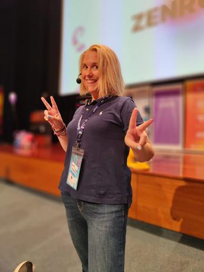
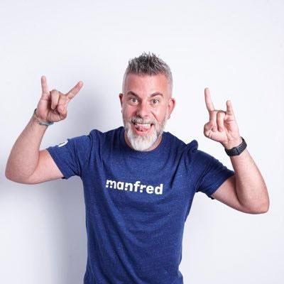
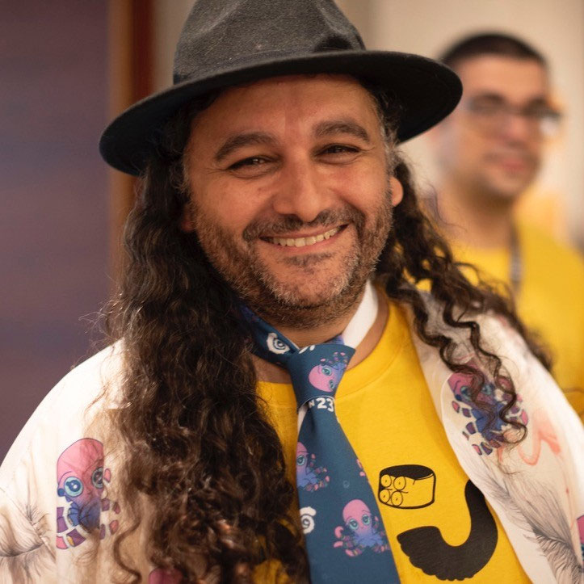
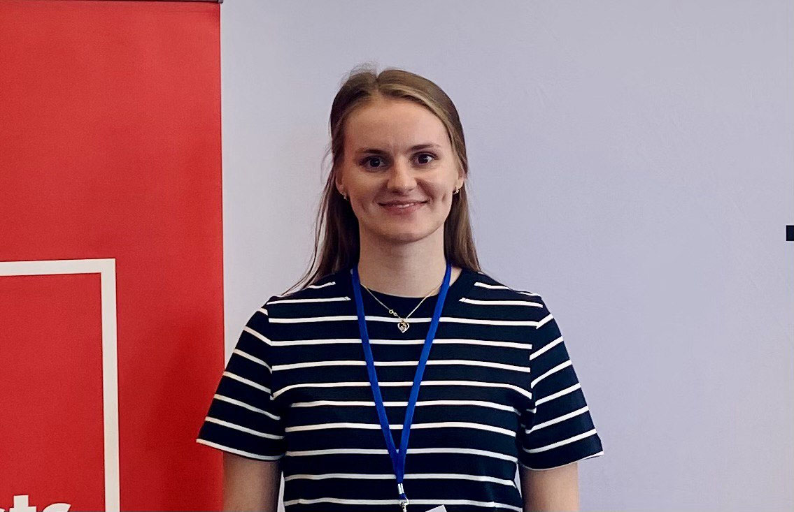
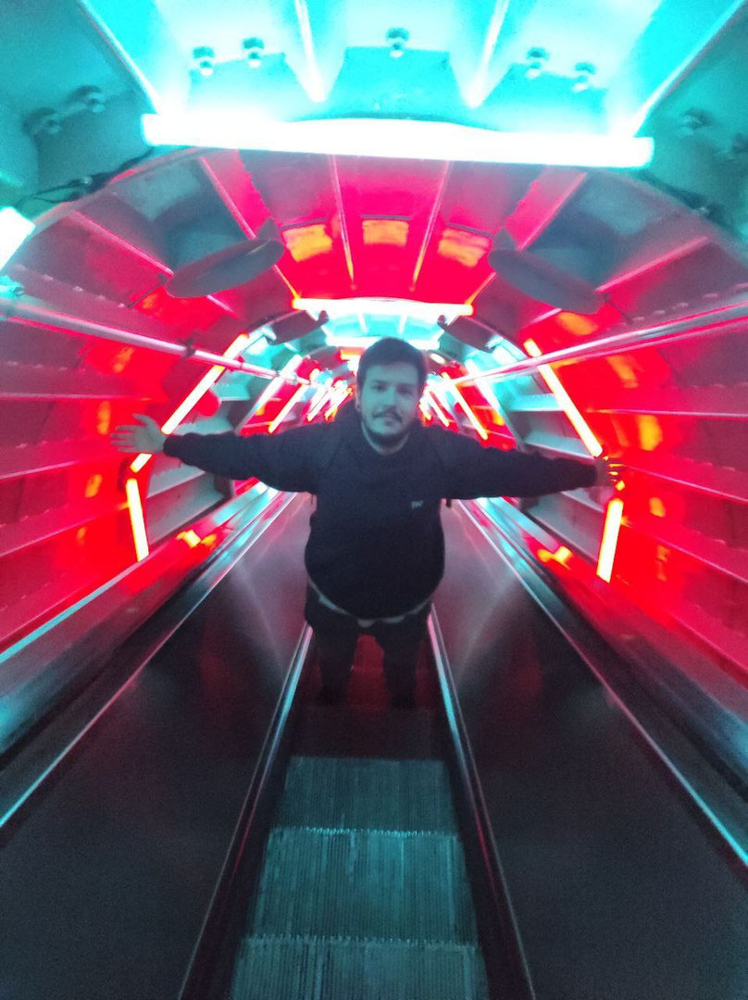

| 09:00 - 09:25 |
Registration |
| 09:30 - 09:55 |
Opening |
| 10:00 - 10:55 |
 Desapego radical en la era de la IA: reinventar cómo
hacemos software
Desapego radical en la era de la IA: reinventar cómo
hacemos software
Edu Ferro
|
| 11:00 - 11:25 |
Break |
| 11:30 - 12:25 |
Deploy de cultura: testing en producción y sin rollback
Concha Asensio Martínez-Rives
|
Product Engineer: ¬°El unicornio que s√≠ existe! ü¶Ñüí•
Leonardo Poza
|
Escalando con cabeza: 7 años de arquitectura para un ecommerce de
100M€
Asier Alba Osambela
|
⚡ Lightning Talks

11:30 - 11:40 | Why Engineers Should Speak Business
Diego Albert
11:40 - 11:50 | 400 personas trabajando sin CEO ni CTO
 Àlex Ollé Parcerisas Àlex Ollé Parcerisas
11:50 - 12:00 | How to delete a production database without deleting
a production database
Ahmed Waseem Saeed
12:00 - 12:10 | Boosting Developer Efficiency Through MCP
Alessio Romano
12:10 - 12:20 | Cuando decir NO acelera el delivery
 Julio de la Calle Julio de la Calle
|
| 12:30 - 13:25 |
Demystifying Design Systems, a simple introduction.
Salvador Sánchez i
Campos
|
Documentando APIs
Javier Rubio
|
 Si Lean i XP van tan bé, per què no ho fan tots els equips?
Si Lean i XP van tan bé, per què no ho fan tots els equips?
Vicenç García Altés
|
⚡ Lightning Talks
12:30 - 12:40 | De ejecutores a motores de producto
Stefan
12:45 - 12:55 | Cuando tu trabajo es buscar trabajo
Abraham Vallez
13:00 - 13:10 | eXtreme Programming in the AI era
Javier Martinez Alcantara
13:15 - 13:25 | De startup a scaleup: escalando la comunicación
Marta Moreno Mata
|
| 13:30 - 14:55 |
Lunch |
| 15:00 - 15:55 |
Testing Outside-In con arquitecturas limpias
Rolando
|
Rethinking Discovery: A Sprint-by-Sprint Approach to Building the
Right
Nastassia Shahun
|
¡¿Y ahora a quién le toca?! Entendiendo sistemas Event-Driven sin
volverse loco
Emilio Carrión
|
Automatización moderna de procesos de negocio con Kogito en un mundo cloud-native
Javier Ramos Panduro
|
| 16:00 - 16:55 |
Susurrando DDD a la IA. Un enfoque para controlar la variabilidad de los
LLMs
Fernando Aparicio
Reviriego
|
Attacking tech Debt: A Marathon, Not a Sprint
Rafa Gomez
|
Maquinistas de un tren en marcha: nuestra primera vez construyendo y lanzando un producto nuevo
 Pablo Rodríguez Guillén Pablo Rodríguez Guillén
|
Soft skills: Cómo jugar a rol me hizo mejor programadora
 Mia Salazar Mia Salazar
|
| 17:00 - 17:25 |
Break |
| 17:30 - 18:25 |
El lado humano del Legacy Code
Juan Alberto Martinez López
|
Por qué empezar a contribuir en proyectos open source
David Remon
|
Sobreviviendo al caos distribuido
Isa Garrido
|
Arquitectura de Software con "Residuality"
Alejandro Scandroli
|
| 18:30 - 18:40 |
Closing |
| 18:45 - 21:00 |
Cocktail/Networking |


{kind=link}
{kind=link}
{kind=link}